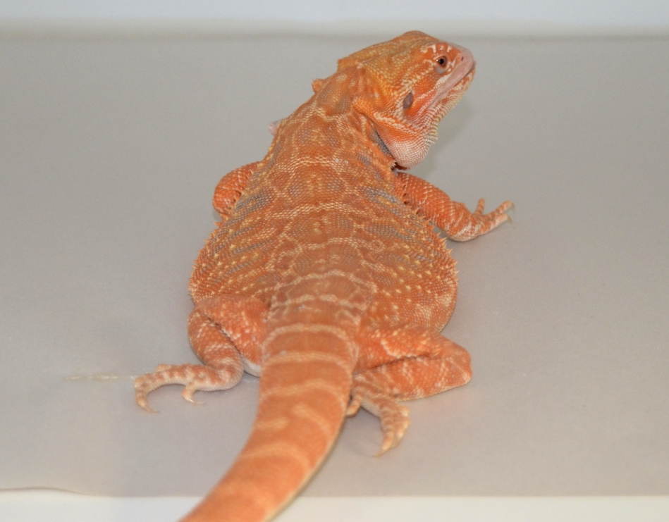
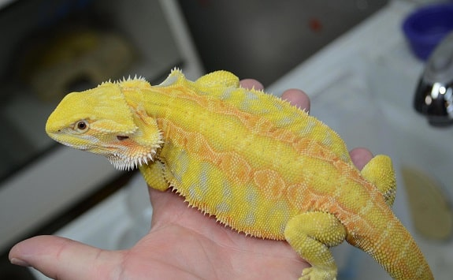
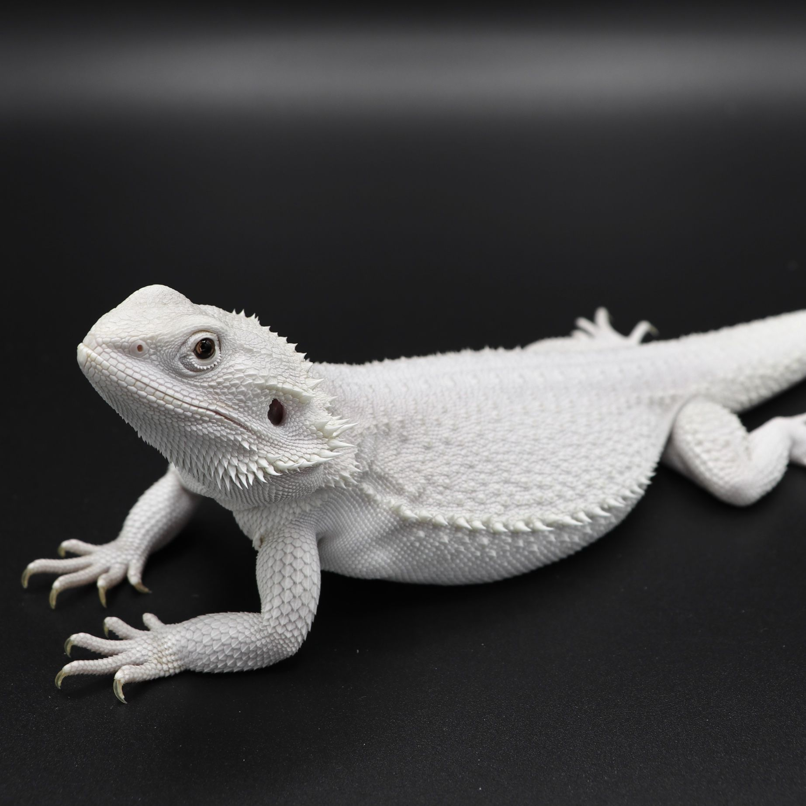
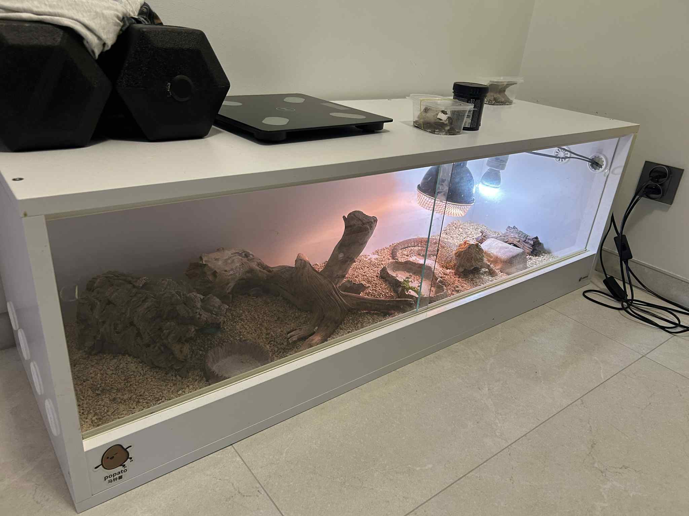

Bearded dragons are a type of lizard that are native to Australia. They are known for their distinctive "beard" of spiny skin under their chin, which they can puff out when they feel threatened or excited. For more scientific information I advise you to go to: Bearded dragon on Wikipedia.
Bearded dragons have many different type variations. Examples include:

A sandfire red bearded dragon

A yellow bearded dragon

An albino bearded dragon
My own bearded dragon pet
I have a bearded dragon named Simon. He is a central bearded dragon, which is the most common type of bearded dragon kept as a pet. Simon is about 7 years old and has a calm and friendly personality. He enjoys basking under his heat lamp and exploring his enclosure.
Simon's habitat consists of a spacious terrarium with a basking area, hiding spots, and climbing branches. The temperature in his enclosure is carefully regulated to mimic his natural environment, with a basking spot that reaches around 95-110°F (35-43°C) and a cooler area around 75-85°F (24-29°C).

As for his diet, Simon is an omnivore and enjoys a variety of foods. His diet includes live insects such as crickets and mealworms, as well as fresh vegetables and fruits. Here is a list of his favourite foods in order of preference:
Dubia roaches
Superworms
Crickets
...
..Vegetables and salads at the very bottom
In terms of behaviour, Simon is quite active during the day and enjoys interacting with me when I handle him gently. He can be quite curious and will often explore new objects or changes in his environment. He loves to be outside and hang out with his cat pals.
Simon, Bruno, and Boris
Overall, Simon is a wonderful pet and brings a lot of joy to my life.